Background: What’s an Input Method Editor?
An IME (input-method editor) is an application that allows a standard keyboard (such as a US-101 keyboard) to be used to type characters and symbols that are not directly represented on the keyboard itself. In China, Japan, and Korea, IMEs are used ubiquitously to enable standard keyboards to be employed to type the very large number of characters required for writing in Chinese, Japanese, and Korean.
On platforms with touch-based input device such as mobile phones, an IME also plays a role to type text that a simple on-screen keyboard cannot type directly.
A system IME is an IME already installed on a user's system.
An IME consists of two modules; a composer and a converter.
A composer is a context-free parser that composes non-ASCII characters (including phonetic characters) from keystrokes, e.g. Hiragana or Pinyin.
A converter is a context-sensitive parser that looks up a dictionary to convert phonetic characters to a set of ideographic characters, e.g. Kanji.
An IME clause is a grammatical word produced in an IME.
An IME selected clause is an IME clause currently being converted by an IME.
An IME composition is an instance of text produced in an IME. For IMEs that can produce multiple words, an IME composition consists of multiple IME clauses. For IMEs that produce only one word, an IME composition is equal to an IME clause.
When an IME receives keystrokes, it sends the keystrokes to a composer and receives phonetic characters matching to the keystrokes. When an IME receives phonetic characters from a composer, it sends the phonetic characters to a converter and receives the list of ideographic characters matching to the phonetic characters. The following figure shows the basic structure of an IME.
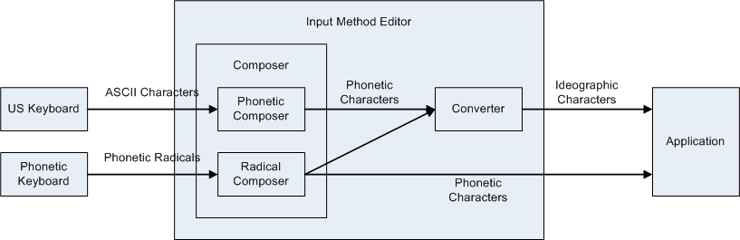
Composer
A composer consists of two types of composers: a phonetic composer and a radical composer.
A phonetic composer composes a phonetic character from its ASCII representation.
A radical composer composes a phonetic character from phonetic radicals.
A phonetic radical is a character component of a Latin character, a Chinese character, or a Korean character. A Latin character can consist of an ASCII character and accent marks, e.g. the character ‘á’ consists of the ASCII character ‘a’ and the accent mark ‘´’. A Chinese character can consist of Chinese character components that refer to its semantic origins, e.g. the Chinese character ‘略’ consists of two components ‘田’ and ‘各’. A Korean character consists of Korean character components that represent consonants or vowels, e.g. the Korean character ‘가’ consists of the consonant ‘ㄱ’ and the vowel ‘ㅏ’.
A composition window is a window that shows ASCII characters being composed by phonetic composers or phonetic radicals being composed by radical composers.
An IME usually shows the text being composed by a composer with its own style to distinguish it from the existing text. Even though most of composers output phonetic characters, some composers (such as Bopomofo composers) output a placeholder character instead of phonetic characters while composing text.
Phonetic Composer
Phonetic composers are not only used for typing Simplified Chinese and Japanese, but also used for typing non-ASCII characters (such as mathematical symbols, Yi, Amharic, etc.) with a US-101 keyboard. Each of these languages has a mapping table from its character to a sequence of ASCII characters representing its pronunciation: e.g., ‘か’ to ‘ka’ in Japanese, and; ‘卡’ to ‘ka’ in Simplified Chinese. This mapping table is called as Romaji for Japanese and Pinyin for Simplified Chinese, respectively. A phonetic composer uses these mapping tables to compose a phonetic character from a sequence of ASCII characters produced by a US keyboard.
An example of a phonetic composer for Simplified Chinese outputs the ASCII characters that were input by the user, as its composition text.

On the other hand, a typical phonetic composer for Japanese outputs phonetic characters when the typed ASCII characters have corresponding phonetic characters.
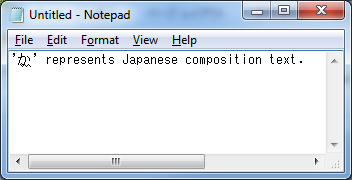
An example of a phonetic composer for mathematical symbols outputs composed mathematical symbol and shows the source keystrokes in its own window, which is an example of a composition window.
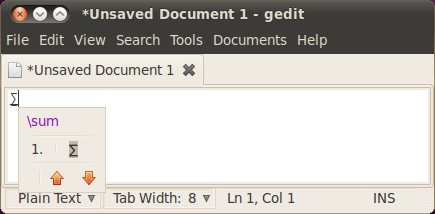
Radical Composer
Radical composers are mainly used for typing Traditional Chinese and Korean with phonetic keyboards. Each phonetic keyboard of these languages can produce phonetic radicals: e.g., typing ‘r’ produces ‘ㄱ’ on a Korean keyboard; typing ‘o’ produces ‘人’ on a Traditional-Chinese (or Bopomofo) keyboard, etc. A radical composer composes a phonetic character from phonetic radicals given by these keyboards: e.g., typing ‘ㄱ’ (r) and ‘ㅏ’ (k) produces ‘가’ on a Korean keyboard; typing ‘人’ (o), ‘弓’ (n), and ‘火’ (f) produces ‘你’ on a Traditional-Chinese keyboard, etc.
A radical composer for Korean outputs the phonetic radicals as its composition text.
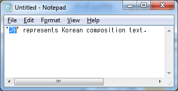
A radical composer for Traditional Chinese outputs a placeholder character (U+3000) and shows the phonetic radicals being composed to its own window. This window is an example of a composition window.
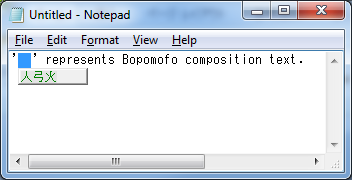
Some platforms (such as Mac and Linux) use radical composers for typing accented characters used in European countries. For example, typing ‘ ̈ ’ (option+u) and ‘a’ (a) produces ‘ä’ on US keyboards of Mac.
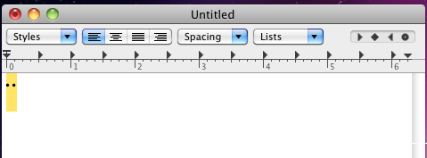
On-Screen Keyboard
On touch-based platforms without hardware keyboard like mobile phone or tablet platforms, some kind of on-screen keyboard is displayed to help a user typing text, which occupies some part of the screen. A user uses this keyboard to type composition text.
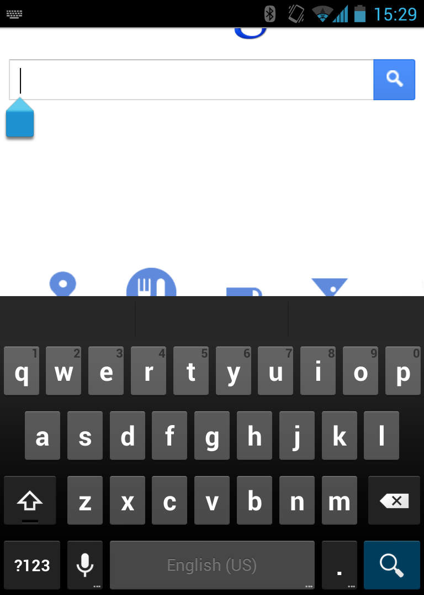
The layout of an on-screen keyboard may vary depending on language or its input modality (e.g. a telephone number input field requires number buttons only).
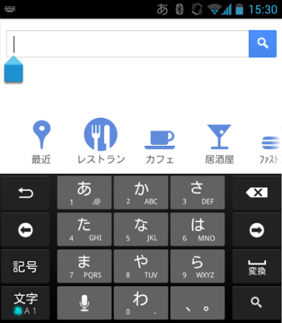
Converter
A converter is a context-sensitive parser used for replacing the outputs of a composer to ideographic characters on Chinese, Japanese, and Korean.
Korean seldom uses ideographic characters.
Because Chinese, Japanese, and Korean have many homonyms, each sequence of phonetic characters usually matches many ideographic characters: e.g., a Japanese phonetic character ‘か’ matches Japanese ideographic characters ‘化’, ‘科’, ‘課’, etc.; Pinyin characters ‘ka’ matches Simplified-Chinese ideographic characters ‘卡’, ‘喀’, ‘咯’, etc.; Bopomofo characters ‘人弓’ matches Traditional-Chinese ideographic characters ‘乞’, ‘亿’, ‘亇’, etc.
A converter looks up a dictionary and shows a list of candidates of possible ideographic characters so a user can choose one. This list is known as a candidate list. A candidate list is known as a candidate window when it has its own window.
Some Japanese IMEs show annotations in its candidate window for a character that is not so easy to distinguish from other characters (such as full-width alphabets, full-width Katakanas, and half-width Katakanas, etc.), as shown in the following figure.
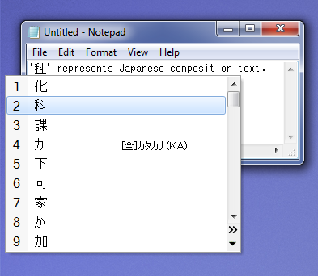
The next figure shows a candidate window of a Simplified-Chinese IME.
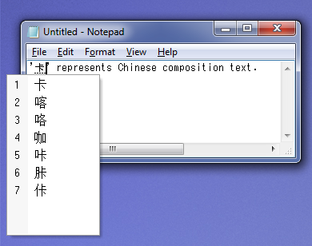
And the next figure shows a candidate window of a Traditional-Chinese IME.

Some techniques are used to improve conversion quality. For example, a converter integrates an MRU (Most-Recently Used) list. Even though there are many ideographic characters for each phonetic character (or phonetic radical), a user does not usually use all these ideographic characters. A converter uses an MRU list to filter out ideographic characters not used so often from a candidate list. Another example is a grammar parser. A converter that integrates a grammar parser splits the given phonetic characters into grammatical clauses and converts only one clause at a time. When a sequence of phonetic characters consists of n clauses and the i-th clause has m_i candidates, the total number of the candidates for the input characters becomes (m_1 * m_2 * … * m_n). To reduce the number of candidates owned by a converter, a converter usually processes one clause at a time. This clause is called the selected clause.
An IME usually renders a selected clause with a special style to distinguish it from other clauses, as shown in the following figure.
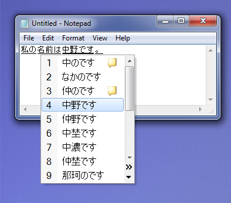
When a converter converts two or more clauses, it chooses candidates for the selected clause so it becomes grammatically consistent with the surrounding clauses: e.g., Japanese converters usually output ‘危機一髪’ (not ‘危機一発’) for Japanese phonetic characters ‘ききいっぱつ’ because ‘危機一発’ is grammatically incorrect.
On a mobile platform, candidates may not appear in a separate window, but occupy some part of the screen for the user to choose the candidate word that they intend as a part of on-screen keyboard.
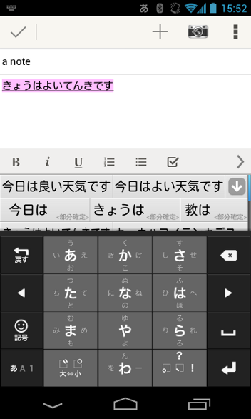
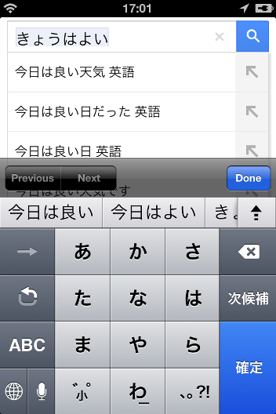